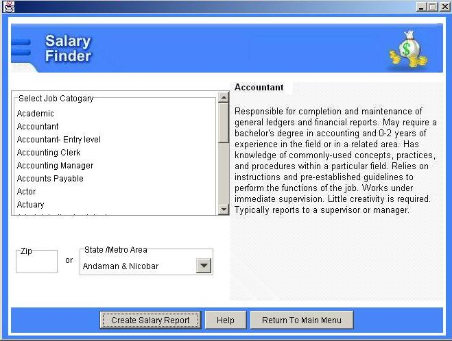

If you do your homework thoroughly and learn the salary range for the job you are considering, you can negotiate your next salary with strength and confidence, and land the good-paying job you deserve. Salary Finder enables you to research competitive salaries in a broad spectrum of industries.
Salary Finder calculates salaries based on job title and geographic location. Salary ranges vary dramatically across the nation and even from rural to urban areas. Salary Finder can show you what your peers are making or what a career change could mean to your paycheck.
l. Click the
 button on the Main Menu. This displays
the Salary Finder
dialog box.
button on the Main Menu. This displays
the Salary Finder
dialog box.

Internet Connection is mandatory for the successful report generation.